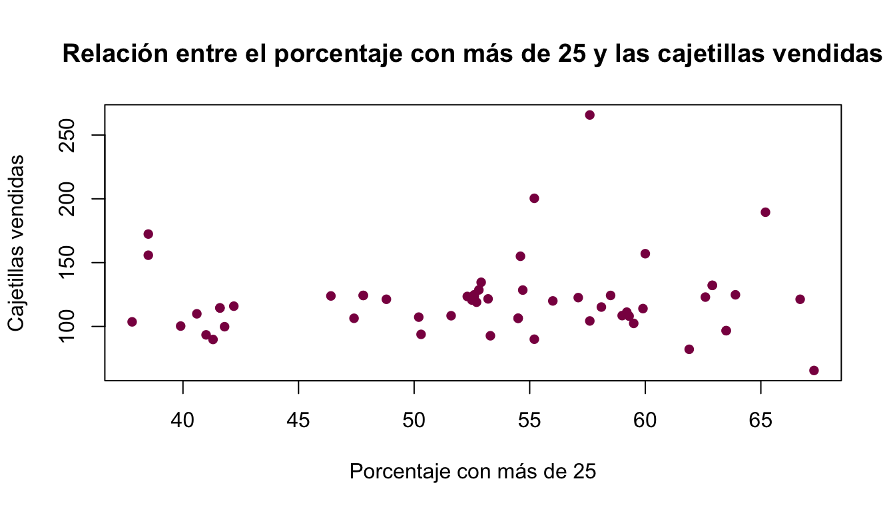
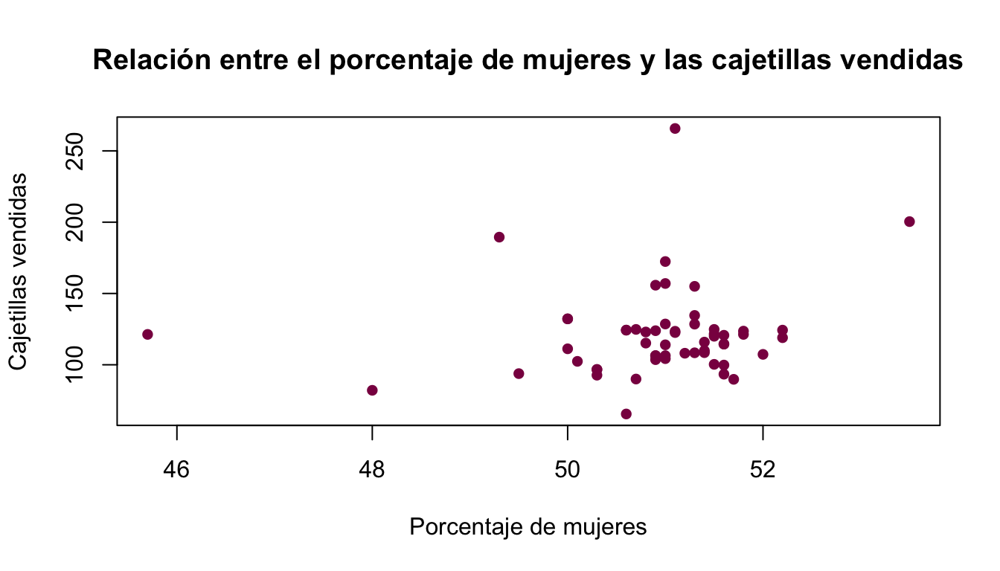
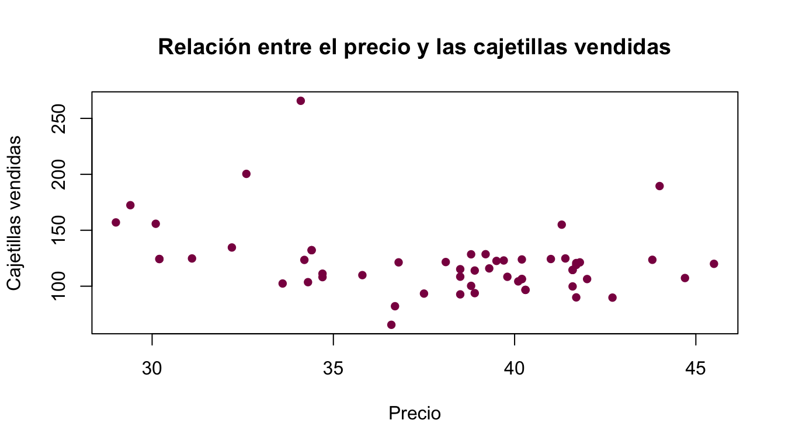
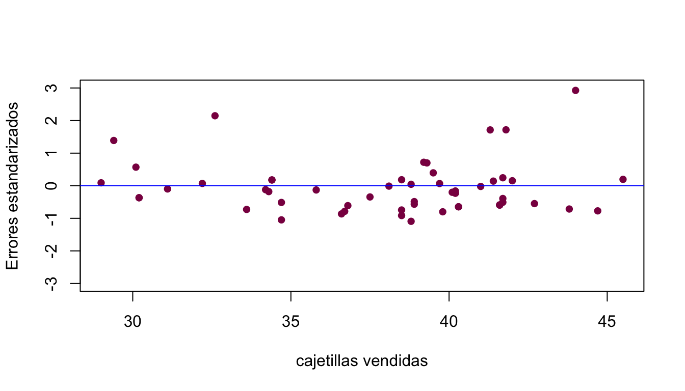
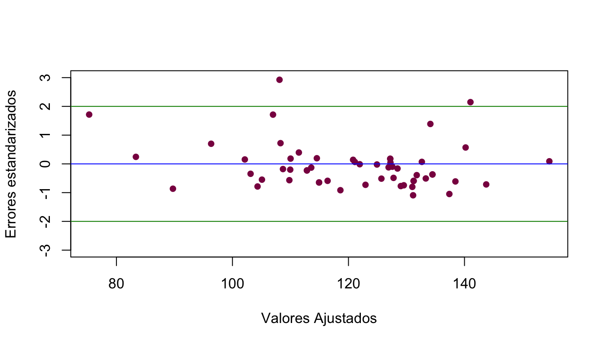

Capítulo 31 Validación de supuestos
Como vimos anteriormente, debemos validar los supuestos del modelo de regresión lineal múltiple:
Supuesto de normalidad
Supuesto de linealidad
Supuesto de homocedasticidad
Valores outlier e influyentes
Supuesto de multicolinealidad
Los primeros enlistados ya se vieron en la sección anterior, lo que vamos a introducir ahora es el supuesto de multicolinealidad.
31.1 Supuesto de multicolinealidad
Se dice que el ajuste del modelo lineal sobre una muestra tiene problemas de multicolinealidad cuando hay una correlación alta entre dos o más variables explicativas, consecuencia de que una variable regresora es linealmente dependiente a alguna o algunas de las demás variables de la matriz diseño \(X\).
Un modelo de regresión lineal con ésta característica provoca un error en la estimación de los parámetros \(\underline{\beta}\), ya que al tener variables linealmente dependientes el determinante \(\mid X'X \mid \ \rightarrow 0\), lo cual provoca que la inversa \((X'X)^{-1} \rightarrow \infty\). Esto provoca el cálculo erróneo de los parámetros, ya que el producto matricial de \(\underline{\hat{\beta}}=(X'X)^{-1}X'\underline{Y}\) no puede ser aproximado de la mejor manera.
31.2 Detección de multicolinealidad
Debido al problema de estimación de los parámetros \(\underline{\beta}\) que ocasiona un modelo con multicolinealidad, se realizan validaciones con la finalidad de tener evidencia suficiente para asumir si el modelo posee o no el problema de dependencia lineal de las variables explicativas.
El método más adecuado para efectuar ésta validación, es encontrar en la matriz de diseño \(X\) variables regresoras linealmente dependendientes a través de operaciones matriciales elementales, sin embargo, este procedimiento es tardado conforme el tamaño de la muestra es mayor, además de que computacionalmente el procedimiento no es óptimo, es por ello que se desarrollan diferentes métodos para conocer si el modelo presenta multicolinealidad.
A través de correlaciones
El primer método para detectar la dependencia lineal es analizar el coeficiente de correlación de las variables, ya que si el modelo posee variables altamente correlacionadas entre sí, es probable que el ajuste lineal presente problemas de multicolinealidad debido a la relación estrecha de éstas variables, una desventaja de éste método es que analiza a través de la matriz de correlaciones de una variable comparada con otra, sin embargo, puede existir una baja correlación entre variables analizándolas una a una pero al analizarlas de dos en dos, o de tres en tres, etcétera, puede encontrarse una alta correlación.
Para analizar de mejor forma la información, se obtiene el determinante de la matriz de correlaciones, si este es muy cercano a cero podría proporcionar indicios de problemas de multicolinealidad, debido a que si hay dos variables que son linealmente dependientes el determinante de la matriz de correlaciones tenderá a cero. Sin embargo, depende del prejuicio del investigador a partir de qué cifra debe ser considerada una cantidad mínima.
A través del índice \(\kappa\)
En 1960, Jacob Cohen, presentó el método del coeficiente kappa. El coeficiente kappa o simplemente \(\kappa\) se basa en el análisis de los eigenvalores \(\lambda_{1},\lambda_{2},\ldots,\lambda_{k}\) de la matriz \((X'X),\) este procedimiento es llamado \(análisis \ del \ egeinsistema.\)
Debido a que \((X'X)\) es una matriz simétrica, el producto de la matriz diseño es igual a sus valores propios o eigenvalores. De esta manera el método propone observar la proporción del eigenvalor más grande respecto al más pequeño, si la proporción es pequeña, no hay problemas de multicolinealidad pues todos los valores propios son similares, sin embargo, proporciones altas indican gran variabilidad en los valores propios por lo que se tiene indicios de multicolinealidad. De esta manera el coeficiente \(\kappa\) es calculado como:
\[\kappa=\frac{\lambda_{max}}{\lambda_{min}}.\]
31.3 Ejemplo
Se tiene información sobre las cajetillas vendidas y queremos saber que factores influyen en dichas ventas.
cigarros=read.table("datos cigarros.csv",sep=",",header=TRUE)
attach(cigarros)Lo primero que hay que hacer es identificar las variables que hay en la base y realizar diagramas de dispersión para tener una idea de que tipo de relación existe entre las variables.
ESTADO SCIG AGE ED PERFEM PRICE
1 1 89.8 27.0 41.3 51.7 42.7
2 2 121.3 22.9 66.7 45.7 41.8
3 3 115.2 26.3 58.1 50.8 38.5
4 4 100.3 29.1 39.9 51.5 38.8
5 5 123.0 28.1 62.6 50.8 39.7
6 6 124.8 26.2 63.9 50.7 31.1\(\textbf{y}=\textbf{SCIG} \ : \ \mbox{Cajetillas de cigarro vendidas}\)
\(\textbf{x}_1=\textbf{AGE} \ : \ \mbox{Edad promedio}\)
\(\textbf{x}_2=\textbf{ED} \ : \ \mbox{Porcentaje de personas con más de 25 años}\)
\(\textbf{x}_3=\textbf{PERFEM} \ : \ \mbox{Porcentaje de mujeres}\)
\(\textbf{x}_4=\textbf{PRICE} \ : \ \mbox{Precio}\)
ESTADO SCIG AGE ED
Min. : 1.00 Min. : 65.5 Min. :22.90 Min. :37.80
1st Qu.:14.75 1st Qu.:105.9 1st Qu.:26.48 1st Qu.:47.80
Median :28.50 Median :117.5 Median :27.30 Median :53.90
Mean :28.50 Mean :120.9 Mean :27.50 Mean :53.23
3rd Qu.:42.25 3rd Qu.:124.4 3rd Qu.:28.73 3rd Qu.:59.23
Max. :56.00 Max. :265.7 Max. :32.30 Max. :67.30
PERFEM PRICE
Min. :45.70 Min. :29.00
1st Qu.:50.67 1st Qu.:34.62
Median :51.00 Median :38.90
Mean :50.93 Mean :38.01
3rd Qu.:51.50 3rd Qu.:41.33
Max. :53.50 Max. :45.50 Ajuste de un modelo de RLM
Ajustaremos un modelo de RLM considerando lo siguiente:
Emplearemos el método \(\textbf{backward}.\)
El criterio de selección del \(mejor \ modelo\) estará basado en el \(\textbf{AIC}\)
El método backward (eliminación hacia atrás) consiste en comenzar con un modelo que incluya las \(k\) variables regresoras y luego ir eliminando varible por variable de acuerdo a cierto criterio.
El AIC (Criterio de información de Akaike) es una medida de la calidad de un modelo estadístico, considera la \(bondad \ de \ ajuste\) del modelo y su complejidad.
\[AIC=-2log(L) +2* n_{parámetros}\] El mejor modelo es aquel que tenga un \(\textbf{AIC}\) pequeño.
Primer Paso: Relación entre Variables
Primero haremos las gráficas de dispersión correspondientes para ver el comportamiento de los datos.
Diagramas de dispersion por parejas: Primero juntamos todas las variables explicativas y la dependiente en un solo objeto para hacer los diagramas de dispersion para cada pareja
cigarrosvars=data.frame(cigarros$SCIG,cigarros$AGE,cigarros$ED,cigarros$PERFEM,cigarros$PRICE)
cor(cigarrosvars) cigarros.SCIG cigarros.AGE cigarros.ED cigarros.PERFEM
cigarros.SCIG 1.00000000 0.2150081 0.05494773 0.14296083
cigarros.AGE 0.21500813 1.0000000 -0.12564933 0.55508730
cigarros.ED 0.05494773 -0.1256493 1.00000000 -0.43495874
cigarros.PERFEM 0.14296083 0.5550873 -0.43495874 1.00000000
cigarros.PRICE -0.30696253 0.2660560 0.04667213 0.04906057
cigarros.PRICE
cigarros.SCIG -0.30696253
cigarros.AGE 0.26605603
cigarros.ED 0.04667213
cigarros.PERFEM 0.04906057
cigarros.PRICE 1.00000000pairs(cigarrosvars,main="Matriz de dispersion",labels=c("Cajetillas vendidas", "Edad promedio", "Porcentaje con mas de 25", "Porcentaje mujeres", "Precio promedio"),pch=21,bg="deeppink4")A simple vista “no estamos apreciando toda la información”, haremos gráficos dos a dos:
plot(cigarros$AGE,cigarros$SCIG,type = "p",col="deeppink4",pch=16,
xlab="Edad promedio", ylab="Cajetillas vendidas",
main= "Relación entre la edad promedio y las cajetillas vendidas")plot(cigarros$ED,cigarros$SCIG,type = "p",col="deeppink4",pch=16,
xlab="Porcentaje con más de 25", ylab="Cajetillas vendidas",
main= "Relación entre el porcentaje con más de 25 y las cajetillas vendidas")
plot(cigarros$PERFEM,cigarros$SCIG,type = "p",col="deeppink4",pch=16,
xlab="Porcentaje de mujeres", ylab="Cajetillas vendidas",
main= "Relación entre el porcentaje de mujeres y las cajetillas vendidas")
plot(cigarros$PRICE,cigarros$SCIG,type = "p",col="deeppink4",pch=16,
xlab="Precio", ylab="Cajetillas vendidas",
main= "Relación entre el precio y las cajetillas vendidas")
Observemos que tanto la variable de promedio de más de 25 y las cajetillas vendidas muestran una relación, al igual que la variable precio.
Veamos ahora la correlación entre las variables:
cor(cigarros) ESTADO SCIG AGE ED PERFEM
ESTADO 1.000000000 -0.11088992 0.05535895 -0.05138058 -0.002021391
SCIG -0.110889919 1.00000000 0.21500813 0.05494773 0.142960829
AGE 0.055358955 0.21500813 1.00000000 -0.12564933 0.555087298
ED -0.051380577 0.05494773 -0.12564933 1.00000000 -0.434958738
PERFEM -0.002021391 0.14296083 0.55508730 -0.43495874 1.000000000
PRICE -0.055232952 -0.30696253 0.26605603 0.04667213 0.049060568
PRICE
ESTADO -0.05523295
SCIG -0.30696253
AGE 0.26605603
ED 0.04667213
PERFEM 0.04906057
PRICE 1.00000000Las correlaciones entre las variables que no son las cajetillas vendidas no son “altas” por lo que en principio no parece haber problema de considerar todas las variables dentro del modelo.
Segundo Paso: Generación de Modelos y Elección del Mejor Modelo
Emplearemos comandos de R:
Empezaremos con el modelo inicial, le llamamos así ya que es el modelo más grande que podemos suponer, ya que el modelo explica las cajetillas vendidas en función de las otras 4 variables:
modeloini=lm(SCIG~AGE+ED+PERFEM+PRICE, data=cigarros)
summary(modeloini)
Call:
lm(formula = SCIG ~ AGE + ED + PERFEM + PRICE, data = cigarros)
Residuals:
Min 1Q Median 3Q Max
-43.242 -13.160 -5.053 3.166 128.099
Coefficients:
Estimate Std. Error t value Pr(>|t|)
(Intercept) -8.0742 231.4589 -0.035 0.97231
AGE 5.2521 2.6733 1.965 0.05492 .
ED 0.5115 0.5389 0.949 0.34699
PERFEM 1.3716 4.8326 0.284 0.77770
PRICE -2.9599 0.9713 -3.047 0.00365 **
---
Signif. codes: 0 '***' 0.001 '**' 0.01 '*' 0.05 '.' 0.1 ' ' 1
Residual standard error: 28.62 on 51 degrees of freedom
Multiple R-squared: 0.2034, Adjusted R-squared: 0.1409
F-statistic: 3.255 on 4 and 51 DF, p-value: 0.01878De este primer modelo dado que las pruebas de hipótesis para cada \(\beta_{i}\) nos dicen que la única variable significativa es \(\beta_{4}\) que es para la variable Precio. Y hasta el momento tiene sentido esto.
Ahora si, emplearemos el método backward con el criterio AIC.
modelo_backward_AIC=stepAIC(modeloini,direction = "backward")Start: AIC=380.41
SCIG ~ AGE + ED + PERFEM + PRICE
Df Sum of Sq RSS AIC
- PERFEM 1 66.0 41828 378.49
- ED 1 737.8 42500 379.39
<none> 41762 380.41
- AGE 1 3160.6 44923 382.49
- PRICE 1 7604.1 49366 387.77
Step: AIC=378.49
SCIG ~ AGE + ED + PRICE
Df Sum of Sq RSS AIC
- ED 1 689.2 42517 377.41
<none> 41828 378.49
- AGE 1 5402.7 47231 383.30
- PRICE 1 7813.1 49641 386.08
Step: AIC=377.41
SCIG ~ AGE + PRICE
Df Sum of Sq RSS AIC
<none> 42517 377.41
- AGE 1 4965.6 47483 381.60
- PRICE 1 7481.7 49999 384.49Ahora observemos el mejor modelo, de acuerdo a lo arrojado en stepAIC().
summary(modelo_backward_AIC)
Call:
lm(formula = SCIG ~ AGE + PRICE, data = cigarros)
Residuals:
Min 1Q Median 3Q Max
-35.828 -15.601 -6.451 3.807 130.691
Coefficients:
Estimate Std. Error t value Pr(>|t|)
(Intercept) 83.4541 61.0443 1.367 0.17736
AGE 5.3878 2.1656 2.488 0.01603 *
PRICE -2.9121 0.9536 -3.054 0.00353 **
---
Signif. codes: 0 '***' 0.001 '**' 0.01 '*' 0.05 '.' 0.1 ' ' 1
Residual standard error: 28.32 on 53 degrees of freedom
Multiple R-squared: 0.1889, Adjusted R-squared: 0.1583
F-statistic: 6.174 on 2 and 53 DF, p-value: 0.003889A través de la tablas ANOVA se tiene:
anova(modelo_backward_AIC)Analysis of Variance Table
Response: SCIG
Df Sum Sq Mean Sq F value Pr(>F)
AGE 1 2423 2423.4 3.0209 0.088005 .
PRICE 1 7482 7481.7 9.3264 0.003529 **
Residuals 53 42517 802.2
---
Signif. codes: 0 '***' 0.001 '**' 0.01 '*' 0.05 '.' 0.1 ' ' 1De los resultados obtenidos podemos refinar el \(mejor \ modelo\) obtenido:
modelo_refinado=lm(SCIG~0+AGE+PRICE,cigarros)
summary(modelo_refinado)
Call:
lm(formula = SCIG ~ 0 + AGE + PRICE, data = cigarros)
Residuals:
Min 1Q Median 3Q Max
-30.841 -16.734 -5.385 4.999 131.509
Coefficients:
Estimate Std. Error t value Pr(>|t|)
AGE 7.809 1.257 6.214 7.73e-08 ***
PRICE -2.477 0.906 -2.734 0.00845 **
---
Signif. codes: 0 '***' 0.001 '**' 0.01 '*' 0.05 '.' 0.1 ' ' 1
Residual standard error: 28.55 on 54 degrees of freedom
Multiple R-squared: 0.9495, Adjusted R-squared: 0.9476
F-statistic: 507.6 on 2 and 54 DF, p-value: < 2.2e-16Entonces ya obtuvimos el mejor modelo, que está compuesto por:
\[\mbox{Cajetillas vendidas}= 7.809*\mbox{Edad promedio}-2.477*\mbox{Precio}\] Bueno todavía debemos validar los supuestos:
Tercer Paso Validadción de Supuestos
Siguiendo el orden de nuestros capítulos, para validar gráficamente la normalidad de los errores debemos graficar los errores contra los cuantiles de la distribución normal.Para ello aplicamos la función qqnorm y con qqline obtenemos la recta diagonal que nos servirá para ver que tan lejos o cerca de la distribución normal están cayendo los residuales.
qqnorm(rstandard(modelo_refinado),ylim = c(-2,2),xlim = c(-2,2))
qqline(rstandard(modelo_refinado),distribution = qnorm,col="deeppink4")Podemos observar que la parte central de la distribución si se ajusta a una distribución normal, sin embargo, en los extremos los residuales ya no se comportan como una distribución normal.
Podemos aplicar la prueba de bondad de ajuste Lilliefors para normalidad vista en Bondad de Ajuste:
lillie.test(rstandard(modelo_refinado))
Lilliefors (Kolmogorov-Smirnov) normality test
data: rstandard(modelo_refinado)
D = 0.23318, p-value = 4.065e-08Como el valor del \(p-value\) es menor al nivel de significancia \(\alpha=0.05\) entonces rechazamos \(H_{0}\), es decir nuestros residuales no tienen distribución normal.
Supuesto de Linealidad
Como se menciona en el capítulo, graficaremos los errores estandarizados contra los valores observados de la variable explicativa.

Para ambas variables, salvo por la posible presencia de algunos valores atípicos que salen de la franja horizontal \((-2,2)\), el resto de las observaciones parecen distribuirse como ruido blanco.
Supuesto de Homocedasticidad
Se dice que una muestra es homocedástica cuando la varianza es constante a lo largo de todas las observaciones, es decir, no varia conforme se presentan nuevas observaciones.

- Si la varianza es constante entonces la gráfica fluctuaráentre el eje horizontal de manera simétrica, y sin seguir algún patrón, y se espera que la mayor parte de los errores estén contenidos en franjas horizontales delimitados por el eje entre -2 y 2. En éste ejemplo la dispersión regular de los residuales dentro de las Bandas superior e inferior y que no haya residuales que se alejen tanto de la Banda 0, indican varianza constante.
Adicionalmente aplicaremos las pruebas vistas en el capítulo para tener certeza estadística de la validez del supuesto de homocedasticidad.
Prueba White
dataset=data.frame(cigarros$AGE,cigarros$PRICE,cigarros$SCIG)
mode1=VAR(dataset,p=1)
whites.htest(mode1)
White's Test for Heteroskedasticity:
====================================
No Cross Terms
H0: Homoskedasticity
H1: Heteroskedasticity
Test Statistic:
39.1790
Degrees of Freedom:
36
P-value:
0.3291 Por el \(p-value\), la hipótesis de homocedasticidad no se rechaza.
Supuesto de Multicolinealidad
X1=scale(cigarros[,-5])
A=t(X1)%*%X1
kappa=max(eigen(A)$values)/min(eigen(A)$values)
kappa[1] 3.151592El coeficiente \(kappa\) es de 3.15 por lo tanto no tenemos problemas de multicolinealidad.